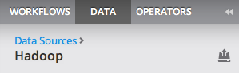

Import to Hadoop
Users with the modeler role can upload and import datasets though any Hadoop connection. The following steps are a guide to uploading and importing data in Alpine.
- Navigate to a folder within a Hadoop connection in the Data Explorer and click the upload data button.

- Chose a file from the local disk and click 'Upload'.
- When the import is complete, the user will be notified by a toast style message.